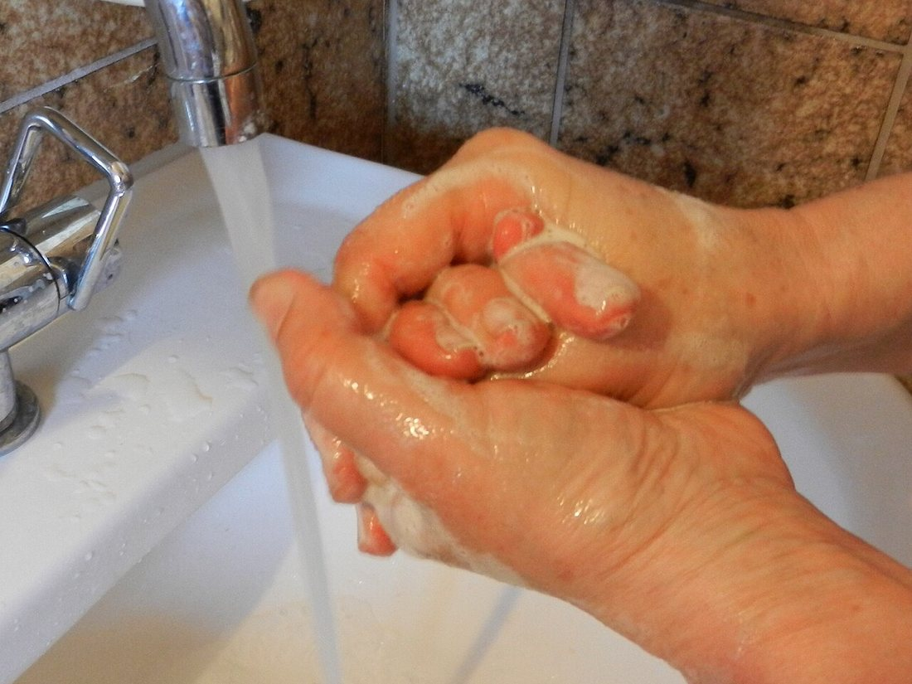
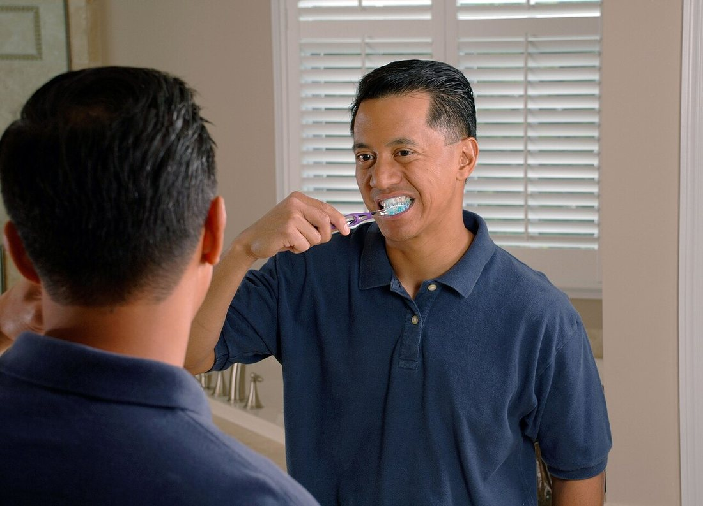
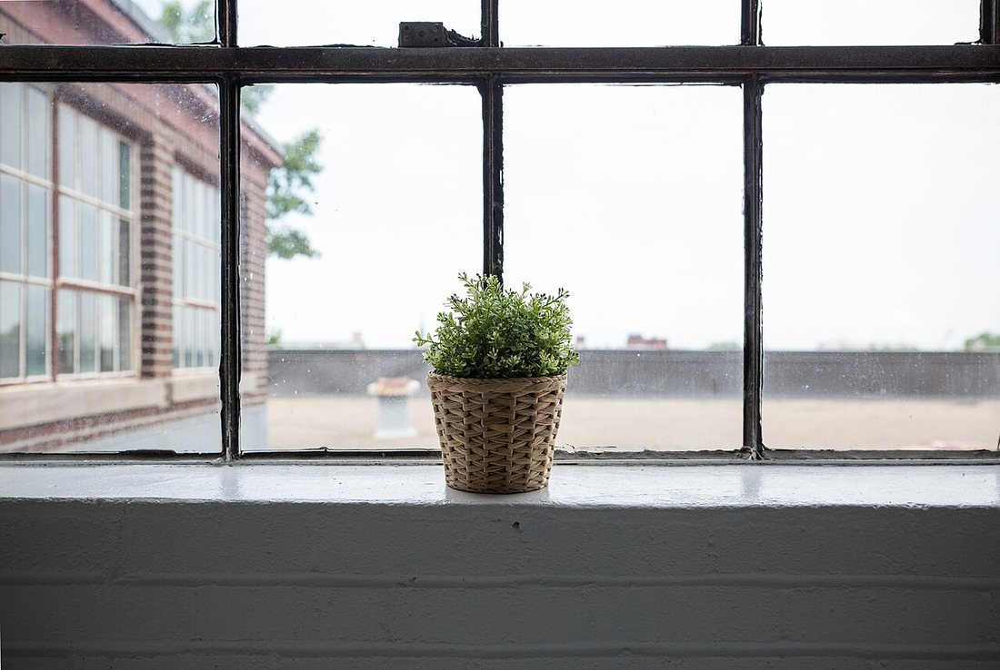
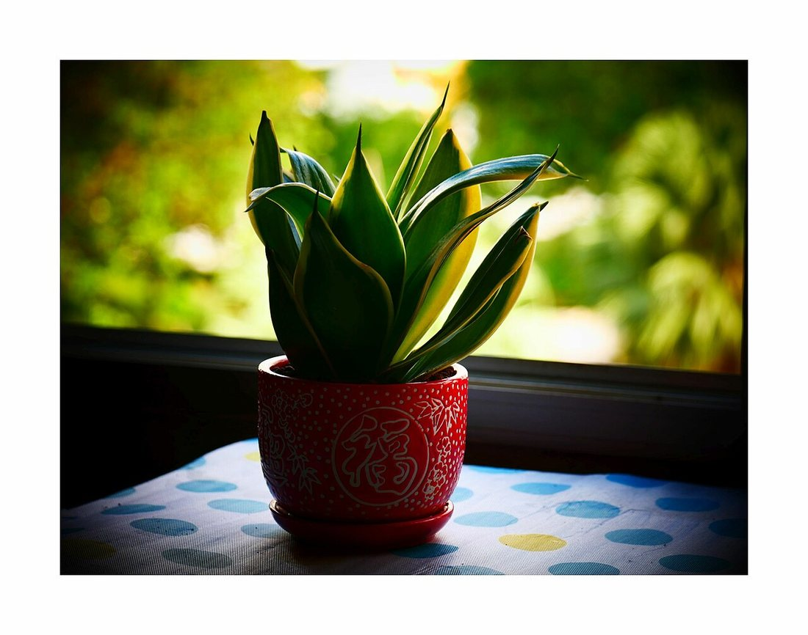
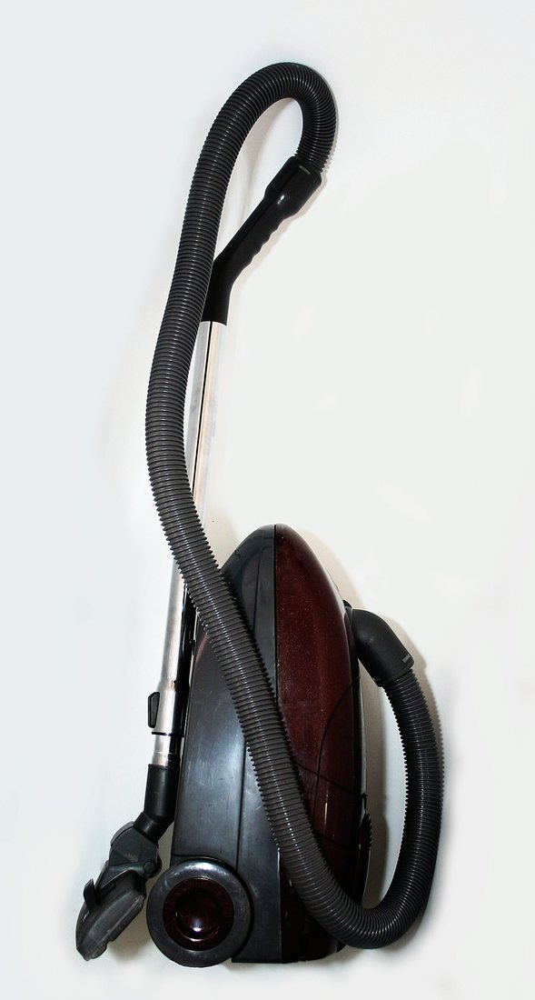

Көркем еңбек · 5-бөлім · Денсаулық пен үй Art & Craft · Section 5 · Health & Home Художественный труд · Раздел 5 · Здоровье и дом
🧼 Жеке гигиена және тұрғын үй экологиясы
🧼 Personal Hygiene & the Ecology of the Home
🧼 Личная гигиена и экология жилища
Таза дене мен таза, сау үй — денсаулықтың екі тірегі. A clean body and a clean, healthy home — the two pillars of good health. Чистое тело и чистый, здоровый дом — две опоры здоровья.
Гигиена — денсаулықты сақтауға және нығайтуға көмектесетін ережелер жүйесі. Оның екі жағы бар. Жеке гигиена — өз денеңді, тісіңді, киіміңді таза ұстау. Тұрғын үй экологиясы — өзің тұратын ортаны таза, жарық, ауасы таза әрі сау ету. Бұл екеуі бір-бірімен тығыз байланысты: таза үйде ауру микробтары аз болады, ал таза адам үйін де таза ұстайды. Денсаулық осы күнделікті ұсақ әдеттерден басталады. Hygiene is a system of rules that helps to keep and strengthen health. It has two sides. Personal hygiene means keeping your body, teeth and clothes clean. The ecology of the home means making the place where you live clean, bright, well-aired and healthy. The two are closely linked: a clean home has fewer germs, and a clean person keeps the home clean too. Health begins with these small daily habits. Гигиена — это система правил, которая помогает сохранять и укреплять здоровье. У неё две стороны. Личная гигиена — это содержание в чистоте своего тела, зубов и одежды. Экология жилища — это создание чистой, светлой, проветренной и здоровой среды, в которой ты живёшь. Эти две стороны тесно связаны: в чистом доме меньше микробов, а чистый человек и дом держит в чистоте. Здоровье начинается с этих маленьких ежедневных привычек.
🔍 Суретті басып үлкейтіңіз. 🔍 Tap a photo to enlarge it. 🔍 Нажмите на фото, чтобы увеличить.


Күнделікті гигиена тәртібі:A daily hygiene routine:Ежедневный распорядок гигиены:
Таңертең.Morning.Утром. Бетіңді жу, тісіңді тазала, шашыңды тара.Wash your face, brush your teeth, comb your hair.Умойся, почисти зубы, причешись.
Күн бойы.During the day.В течение дня. Тамақ алдында және дәретханадан кейін қолды жу.Wash hands before meals and after the toilet.Мой руки перед едой и после туалета.
Кешке.Evening.Вечером. Душқа түс, тісіңді тазала, аяғыңды жу.Shower, brush your teeth, wash your feet.Прими душ, почисти зубы, вымой ноги.
Аптасына.Weekly.Еженедельно. Тырнақты алу, киім мен төсек жабдығын ауыстыру.Trim nails, change clothes and bed linen.Стриги ногти, меняй одежду и постельное бельё.
🧴 Жеке затPersonal itemsЛичные вещи
Орамал, тіс щёткасы, тарақ — тек өзіңдікі.Towel, toothbrush, comb — only your own.Полотенце, щётка, расчёска — только свои.
👕 Таза киімClean clothesЧистая одежда
Іш киімді күнде ауыстыр, киімді таза ұста.Change underwear daily, keep clothes clean.Меняй бельё ежедневно, держи одежду чистой.
💇 Шаш күтіміHair careУход за волосами
Шашты үнемі жу және тара.Wash and comb your hair regularly.Регулярно мой и расчёсывай волосы.
😴 Күн тәртібіDaily rhythmРежим дня
Жеткілікті ұйқы мен қозғалыс — гигиенаның бөлігі.Enough sleep and movement are part of hygiene.Достаточный сон и движение — часть гигиены.
Сау үй — бұл жарық, таза ауа, тазалық және өсімдік бар орта. Үйдегі ауаны жиі тазартып, жинап тұру керек. A healthy home is a space with light, fresh air, cleanliness and living plants. The air should be refreshed and the home kept tidy. Здоровый дом — это среда, где есть свет, свежий воздух, чистота и растения. Воздух нужно регулярно обновлять, а дом — содержать в порядке.



Сау үйдің 4 шарты 4 Conditions of a Healthy Home 4 условия здорового жилища
Таза ауаFresh airСвежий воздух
Күніне бірнеше рет 10–15 мин желдету.Air the room 10–15 min several times a day.Проветривай 10–15 мин несколько раз в день.
ЖарықLightСвет
Күн сәулесі микробты жояды, көңілді көтереді.Sunlight kills germs and lifts the mood.Солнце убивает микробы и поднимает настроение.
Жылу мен ылғалWarmth & humidityТепло и влажность
+18…+22 °C, ауа тым құрғақ болмауы тиіс.+18…+22 °C; the air should not be too dry.+18…+22 °C, воздух не должен быть сухим.
ТазалықCleanlinessЧистота
Шаңды сүрту, еденді жуу, қоқысты шығару.Wipe dust, wash floors, take out rubbish.Вытирай пыль, мой полы, выноси мусор.
Үй жинау кестесі A Cleaning Schedule График уборки
| Как часто | Что делаем |
|---|---|
| Ежедневно | Проветрить комнаты, заправить постель, вымыть посуду, вынести мусор. |
| Еженедельно | Пропылесосить, вымыть полы, вытереть пыль, сменить постельное бельё. |
| Раз в месяц | Помыть окна, протереть двери и батареи, разобрать шкафы. |
| Генеральная | Сезонная большая уборка: всё моется и проветривается основательно. |
| Қаншалықты жиі | Не істейміз |
|---|---|
| Күн сайын | Бөлмені желдету, төсекті жинау, ыдыс жуу, қоқыс шығару. |
| Апта сайын | Шаңсорғышпен тазалау, еден жуу, шаң сүрту, төсек жабдығын ауыстыру. |
| Айына бір рет | Терезе жуу, есік пен батареяны сүрту, шкафтарды реттеу. |
| Жалпы жинау | Маусымдық үлкен жинау: бәрі мұқият жуылып, желдетіледі. |
| How often | What we do |
|---|---|
| Daily | Air the rooms, make the bed, wash dishes, take out the rubbish. |
| Weekly | Vacuum, wash floors, wipe dust, change the bed linen. |
| Monthly | Wash windows, wipe doors and radiators, tidy the cupboards. |
| Deep clean | A big seasonal clean: everything is washed and aired thoroughly. |
Неге үйде өсімдік ұстаймыз? Why Keep Plants at Home? Зачем дома растения?
🌬️ Оттегі.Oxygen.Кислород. Жапырақтар көмірқышқыл газды жұтып, оттегі бөледі.Leaves take in carbon dioxide and give out oxygen.Листья поглощают углекислый газ и выделяют кислород.
💧 Ылғал.Moisture.Влажность. Өсімдік ауаны ылғалдандырып, шаңды азайтады.Plants moisten the air and reduce dust.Растения увлажняют воздух и уменьшают пыль.
😊 Көңіл-күй.Wellbeing.Настроение. Жасыл түс тыныштандырып, үйді жайлы етеді.Green calms you and makes the home cosy.Зелень успокаивает и делает дом уютным.
💬 Қорытынды 💬 In a nutshell 💬 Главное
Жеке гигиена мен үй экологиясы — бір тізбектің екі буыны. Таза дене, таза киім, желдетілген әрі жинаулы үй, жарық пен өсімдік — осының бәрі денсаулықты сақтайды әрі көңіл-күйді көтереді. Бұл күрделі емес: күн сайынғы шағын әдеттер үлкен нәтиже береді. Personal hygiene and home ecology are two links in one chain. A clean body, clean clothes, an aired and tidy home, light and plants — all of this protects health and lifts the mood. It is not difficult: small daily habits bring a big result. Личная гигиена и экология жилища — два звена одной цепи. Чистое тело, чистая одежда, проветренный и убранный дом, свет и растения — всё это сохраняет здоровье и поднимает настроение. Это несложно: маленькие ежедневные привычки дают большой результат.